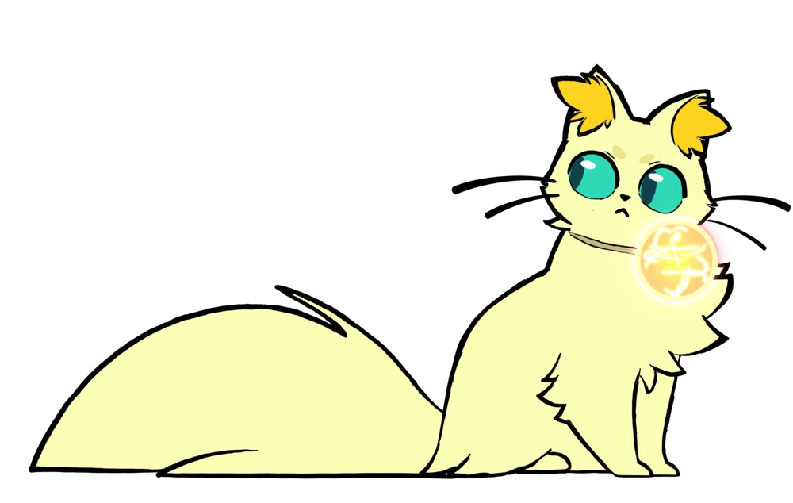
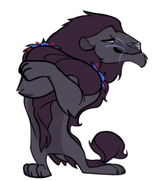
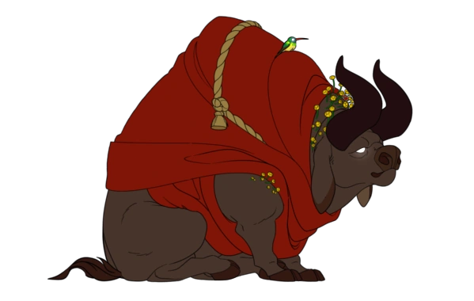
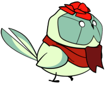

-
Desenvolvedor
Lótus® do Trovão
-
Lançamento
18 de agosto de 2020
-
Disponível em
-
Idioma disponível
Inglês, Japonês, Francês, Alemão, Espanhol - Espanha, Coreano, Russo,
Chinês Simplificado, Chinês Tradicional, Português - Brasil -
Número de jogadores
Single ou Multiplayer local
-
Thunder Lotus Socials


-
Contato com a Imprensa / Negócios
-
Endereço
3970 rue Saint-Ambroise, Montreal, Quebec, Canadá
-
Jurídico
Política de monetização e merchandising


Historia
Spiritfarer é um jogo de gerenciamento aconchegante sobre morrer. Você interpreta Stella, a barqueira do falecido, uma Viajante de Espíritos. Construa um barco para explorar o mundo, depois faça amizade e cuide dos espíritos antes de finalmente libertá-los para o além. Cultive, minere, pesque, colha, cozinhe e fabrique seu caminho através de mares místicos. Junte-se à aventura como Narciso, o gato, em modo cooperativo para dois jogadores. Passe um tempo relaxante e de qualidade com seus passageiros espíritos, crie memórias duradouras e, por fim, aprenda a se despedir dos seus amigos queridos. O que você vai deixar para trás?
A Edição de Despedida de Spiritfarer® é a edição definitiva do premiado jogo de gerenciamento aconchegante sobre morrer. Ele reúne o emocionante jogo base amado por mais de 1 milhão de jogadores, junto com três grandes atualizações de conteúdo: explore um mundo expandido e faça amizade com quatro novos amigos espirituais! Veja por que os críticos chamaram Spiritfarer de um dos Melhores Jogos de 2020.
As produções anteriores da Thunder Lotus, Jotun (2015) e Sundered (2017), receberam grandes elogios da imprensa e dos jogadores por seus visuais deslumbrantes e jogabilidade desafiadora. Ansioso para explorar outros gêneros de jogos e abordar temas mais maduros e uma estrutura narrativa mais rica, a Thunder Lotus trouxe o veterano diretor criativo AAA Nicolas Guérin para comandar Spiritfarer. A paixão contagiante de Guérin pelo projeto provou ser uma grande força motivadora para a equipe de desenvolvimento.
Spiritfarer provou ser o lançamento de maior sucesso da Thunder Lotus até hoje, recebendo elogios da crítica e mais de 1 milhão de cópias vendidas. É vencedor de múltiplas categorias no Canadian Game Awards e já foi indicado a várias categorias no The Game Awards 2020, BAFTA Game Awards 2021, 24º D.I.C.E. Awards Anual, Independent Games Festival Awards 2021 e nos Hugo e Nebula Awards.
Capturas de Telas


Personagens

STELLA
Stella é a barqueira dos Espíritos. Estuda mapas, verifica o navio, pesca e tem uma bela horta — ultimamente, não tem tido tempo para cuidar dela, então esquece a "Bela Horta". Tem uma ferraria, cuida de animais e, como se não bastasse, também cuida dos hóspedes — muitas vezes exigentes —, planeja o layout do hotel no barco e faz mais um monte de coisas que não é possível listar. ALGUÉM, PELO AMOR DE DEUS, SOCORRE ESSA MENINA!

DAFOODIL
Com um nome comprometedor para línguas derivadas do português, esse gato fofo sempre... SEMPRE acompanha sua tutora, Stella, para todos os lugares. Nada em meio a ondas ruidosas, maneja uma serra para cortar árvores e... Deixa quieto. Ele tem essa bola brilhante que ajuda Stella em suas aventuras. Pelo menos, o gato ajuda, diferente desses hóspedes que só sabem dormir, reclamar e levar gaia.

ASTRID
Essa é uma das hóspedes. Iconic. Diva. Plena e de leque. Mesmo com o temperamento forte de velha, ainda assim, ela é bem legal e uma verdadeira companheira para toda a vida. Stella a encontrou em meio à chuva, em uma das fábricas. Astrid planejava uma Revolução Trabalhista, mas acabou levando gaia do marido, Geovanne.

GEOVANNE
O rei leão. O macho alfa. Ou não. Geovanne é só alguém que está tentando de tudo para voltar com a esposa, Astrid, após alguns... bom... deslizes que o fizeram perder o casamento. O plano: caixa de bombons. Ele mesmo poderia comprar, claro, mas, como sabemos, Stella é tratada como a escrava do grupo. Sem suspense ou mistério, Astrid perdoou as traições do marido, só para, na noite seguinte, ele pegar uma desconhecida.

BRUCE E MIKE
Amigos inseparáveis, amantes de palavrões. Eles se aventuram por aí, fazendo o que bem entendem. É só isso mesmo.

BERVELY
Após sofrer nas mãos de Pennywise — e de praticamente todo mundo —, Beverly levou uma vida cansativa, repleta de lembranças e feridas jamais cicatrizadas. Na velhice, alugou um pequeno apartamento nos campos de Oxbury, onde conheceu sua vizinha, Stella. Conversas fora e fofocas que, para sua surpresa, a levaram a um fim de vida tranquilo.